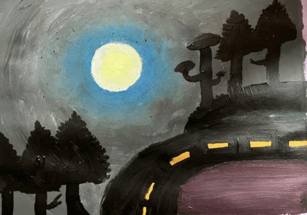
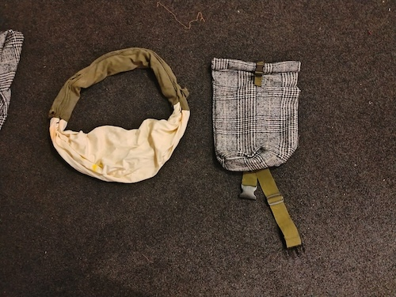
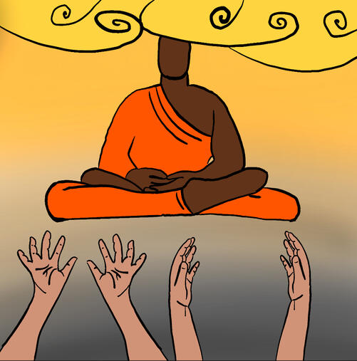
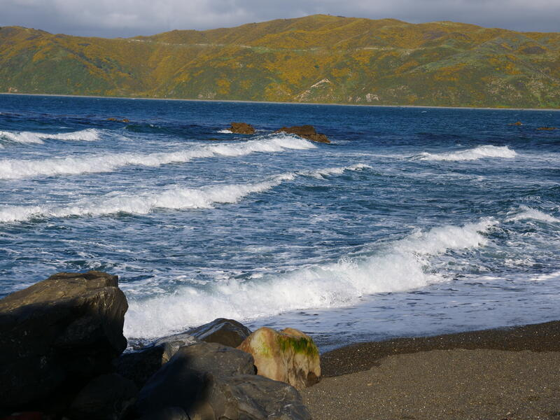
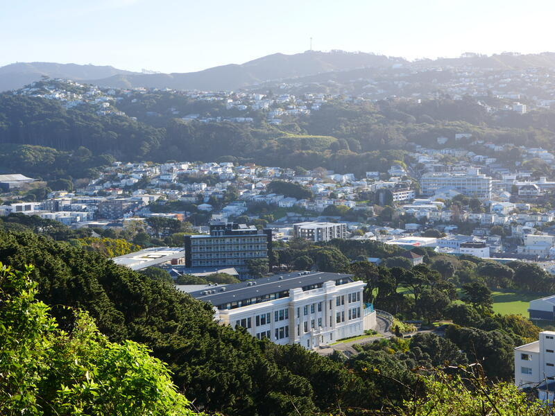
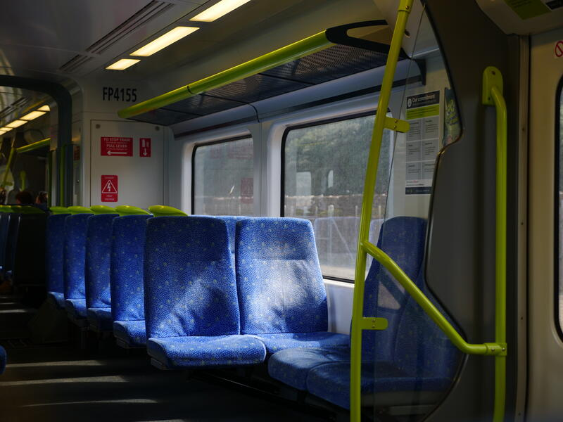
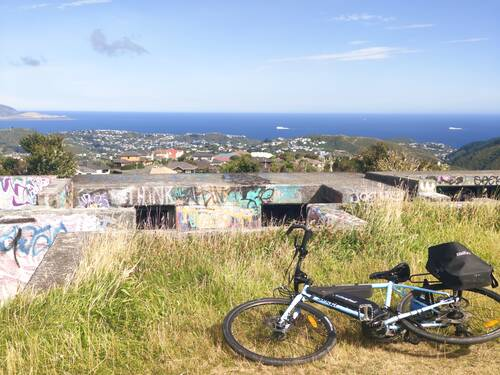
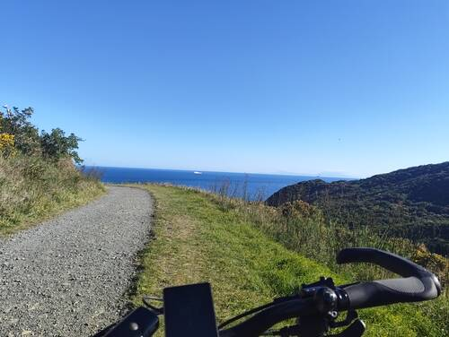
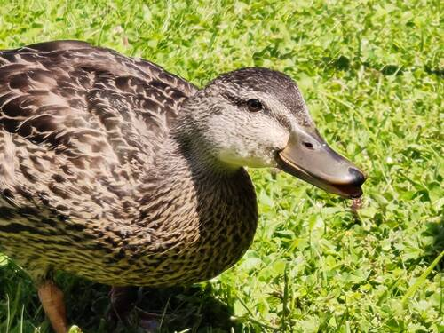
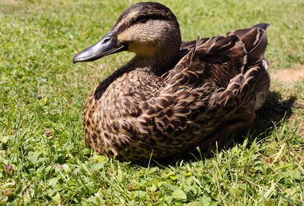

Win Sivers
Impossible Road

Most things about it aren’t so good but I am very proud of the moon.
Sewing Bags

I made the white and green bag inspired by the Studio Ghibli movie Arrietty. It has a very padded strap and a velcro seal. The next one I made as kind of a forest adventuring bag. It has a tube-like structure and it uses a buckle and rolling to seal it. The strap is not thin stolen off of an old bag I don’t use.

I did this one while in our new house. I used myself meditating and images of my own hands as a reference.
My photos



Here are a few photos of the spots I have visited.



And here are some photos I took of ducks.

